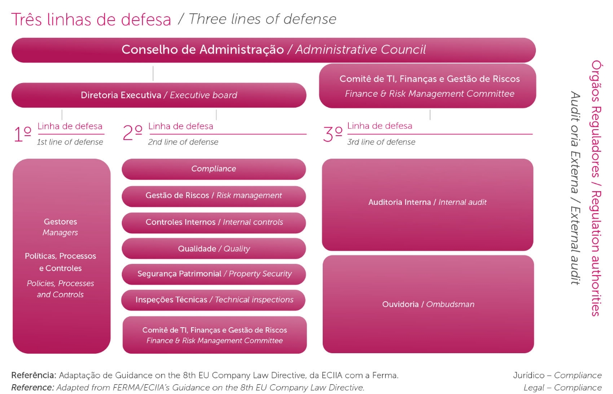

Compliance e gestão de risco
Para completo atendimento à legislação, normas sanitárias, ambientais, de propriedade intelectual e de segurança, além do respeito à diversidade e a todos os públicos de relacionamento, o Aché conta com uma estrutura de Gestão de Riscos e Compliance que atua para disseminar a cultura de gestão de riscos em todos os níveis da Companhia, com base na metodologia Coso – amplamente utilizada no mundo – e também alinhada à ISO 31000.
O Código de Conduta apresenta as regras e os princípios de comportamento a serem adotados pelos colaboradores, prestadores de serviço, fornecedores, parceiros comerciais e demais públicos que se relacionam com a Companhia ou a representam, orientando quanto a proibição de qualquer prática de corrupção, em todas as suas formas, por meio de atos, omissões, criação ou manutenção de favorecimento. Nossos processos são normatizados, ainda, por políticas, como a Política de Compras, Relações Comerciais com o Poder Público, Partes Relacionadas e Política de Contratos, dentre outras. Em 2021, não foram identificados casos de corrupção. GRI 205-1, 205-2, 205-3
Em 2021, o principal destaque foi a evolução de nossa matriz de riscos estratégicos, com a definição de papéis e responsabilidades, planos de ação e governança para reporte. Nossa matriz contempla todos os riscos relacionados a questões ESG, que passaram a ser categorizadas como riscos estratégicos, financeiros, operacionais, de conformidade e cibernéticos.
As áreas da Companhia são constantemente estimuladas e treinadas a pensar os negócios já considerando os aspectos de riscos e planos de mitigação. Contamos, ainda, com a realização de auditorias nos processos mais críticos em relação à nossa classificação de riscos, sendo que não foram identificadas fragilidades de materialidade relevante. Nosso processo de escolha e contratação de fornecedores também tem o compliance como balizador, considerando aspectos concorrenciais transparentes, definidos por critérios técnicos, profissionais e éticos.
No modelo de atuação, seguimos consolidando a estratégia baseada nas três Linhas de Defesa (referência: Adaptação de Guidance on the 8th EU Company Law Directive, da ECIIA com a Ferma), que trouxe um nível maior de segurança ao nosso ambiente de controle, permitindo uma atuação integrada e sinérgica entre as áreas de Gestão de Riscos, Controles Internos e Auditoria Interna. GRI 205-1, 205-2
LGPD
Todas as áreas da Companhia atuaram em sinergia visando o atendimento à LGPD (Lei Geral de Proteção de Dados). Estruturamos sistemas e processos e elaboramos e publicamos a política de proteção aos dados.
Com a realização de treinamentos, criamos fluxos para atendimento aos direitos dos titulares, avaliação e risco de projetos, e formamos o Comitê de Privacidade de Dados, com profissionais das áreas Jurídica e de Tecnologia da Informação, estabelecendo governança para o processo.
Contamos com um plano de segurança, que inclui um canal de comunicação, por meio do qual qualquer indivíduo pode solicitar seus dados. Registramos mais de 230 atendimentos de solicitações de titulares de dados em 2021. Não foram registradas queixas comprovadas relativas à violação da privacidade e perda de dados de clientes. GRI 418-1
O Código de Conduta Corporativa do Aché também possui um tópico específico sobre segurança da informação, com diretrizes alinhadas à LGPD. Os colaboradores devem ter confidencialidade em relação à propriedade intelectual, que envolve patentes, marcas registradas, conhecimento, dados técnicos, informações de processos e de mercado, entre outros dados.
Condução ética
Em 2021, realizamos campanhas de divulgação e adesão ao nosso Código de Conduta Corporativa, além de treinamentos on-line. Também foi criado um canal de comunicação direto com a Geração Aché, que esclarece dúvidas sobre o relacionamento com colaboradores, médicos, consumidores, acionistas e fornecedores, além de tópicos como conflito de interesse, práticas anticorrupção, contratação de fornecedores e recebimento de brindes. Publicamos, ainda, o Guia de Transparência e Ética para nossos parceiros de negócio. GRI 102-16
No ano, 100% da alta liderança e da Geração Aché foi comunicada em relação ao Código, que inclui tópicos relacionados ao combate à corrupção. Não foi registrado nenhum caso de corrupção no período. GRI 205-2, 205-3
Em 2022, seguiremos com treinamentos periódicos sobre confidencialidade e práticas anticorrupção, e ainda temas relacionados às denúncias recebidas pelo Canal de Ouvidoria e sobre a LGPD.
Segurança da Informação
Em 2021, a Companhia realizou uma avaliação sobre a maturidade em segurança da informação, que nos direcionou para um plano de elevação das linhas de defesa contra ataques cibernéticos. O plano foi organizado para fortalecer processos visando proteger a Companhia e estão suportados por macroestruturas de operação:
• Security Operation Center (SOC), monitoramento e proteção do perímetro de internet, correlação de eventos e respostas a incidentes.
• Ethical Hacking, testes de intrusão no ambiente com recorrência periódica.
• Threat intelligence, monitoramento das principais marcas do Aché na internet.
Também estruturamos e contratamos uma equipe que gerencia e corrige as vulnerabilidades técnicas, bem como um plano formal de resposta a incidentes cibernéticos. A Companhia conta, ainda, com a cobertura de um seguro cibernético.
Na gestão da privacidade de dados, com o apoio de uma consultoria, realizamos uma análise para garantir a prevenção de possíveis riscos e impactos, e estruturamos um plano de segurança, que inclui um canal de comunicação com pacientes, clientes e demais públicos de relacionamento.